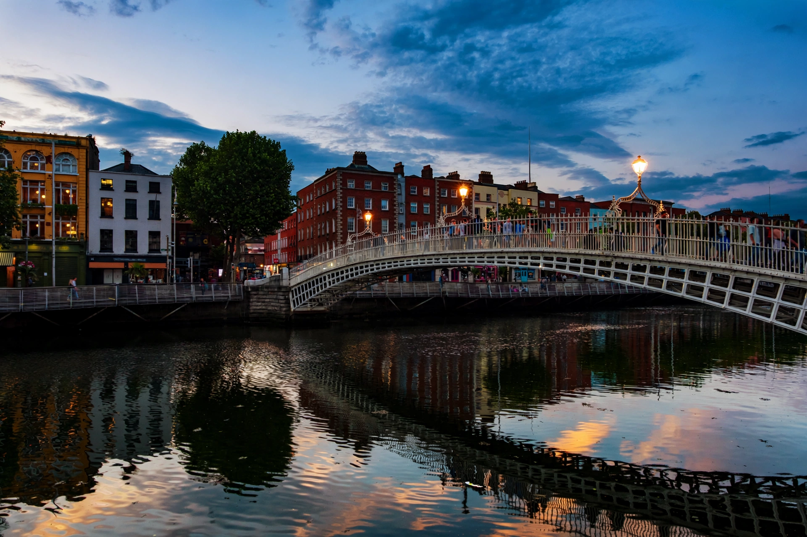

Dublin
From Wikipedia, the free encyclopedia

Dublin is the capital and largest city of Ireland, situated on the east coast at the mouth of the River Liffey. Founded as a Viking settlement in the ninth century, it has been Ireland's primary city since the Middle Ages. The population of the city proper is about 590,000, with some 1.4–1.5 million in the metropolitan area. Dublin is Ireland's political, economic and cultural centre, the seat of Trinity College Dublin and the heart of its literary tradition.
History
The Vikings founded Dyflin in 841 beside the Irish settlement Áth Cliath ('hurdle ford'), the source of the Irish name Baile Átha Cliath. Anglo-Norman forces seized Dublin in 1170; it became the seat of English rule (the Pale) and, in the eighteenth century, a splendid Georgian capital — until the Union of 1800 moved parliament to London. Dublin was the stage of the Easter Rising (1916) and the Irish War of Independence; since 1922 it has been the capital of the Irish state.
Economy and culture
A young, English-speaking, EU-based workforce made Dublin a hub for US technology and pharmaceutical firms — Google, Meta, Apple and others cluster around the 'Silicon Docks'. The city is famed for its literary heritage (James Joyce, whose Ulysses maps a single Dublin day; W. B. Yeats; Samuel Beckett; Seamus Heaney), its pub culture centred on Temple Bar, and institutions such as the Abbey Theatre and the Guinness Storehouse.
Landmarks
Highlights include Trinity College and the Book of Kells, Dublin Castle, St Patrick's and Christ Church cathedrals, the GPO (headquarters of the 1916 Rising), Kilmainham Gaol and the Georgian squares around Merrion Square. Housing costs and rapid growth are the city's defining policy challenges.